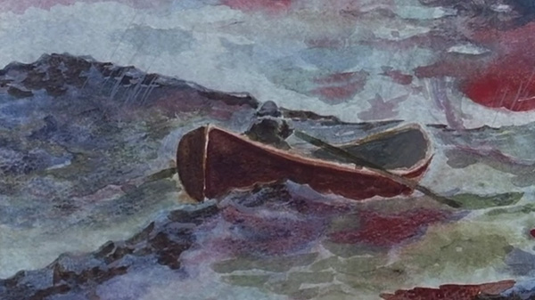

抽空又把之前看的一些电影的感受汇集了一下。现在看电影越来越少了，但上周末还是找了一整天在家把以前的古惑仔全集，过了一遍。以前觉得很一般的古惑仔，这次看完后却又有不同的感受，里面从97前到回归后，故事地点从铜锣湾到日本到荷兰到泰国，社团故事从以前的街头乱砍，到后面的规范管理…一切都像一部社会发展史。陈浩南做古惑仔做到掌门人，却跟青年人说其实他更想过简单的生活。而《心灵捕手》里最后让人内心温暖的，是马特达蒙开着兄弟送的汽车，驶向女友的家乡，而不是某大公司的总部，看来他是真正领悟了导师——罗宾·威廉姆斯的话。